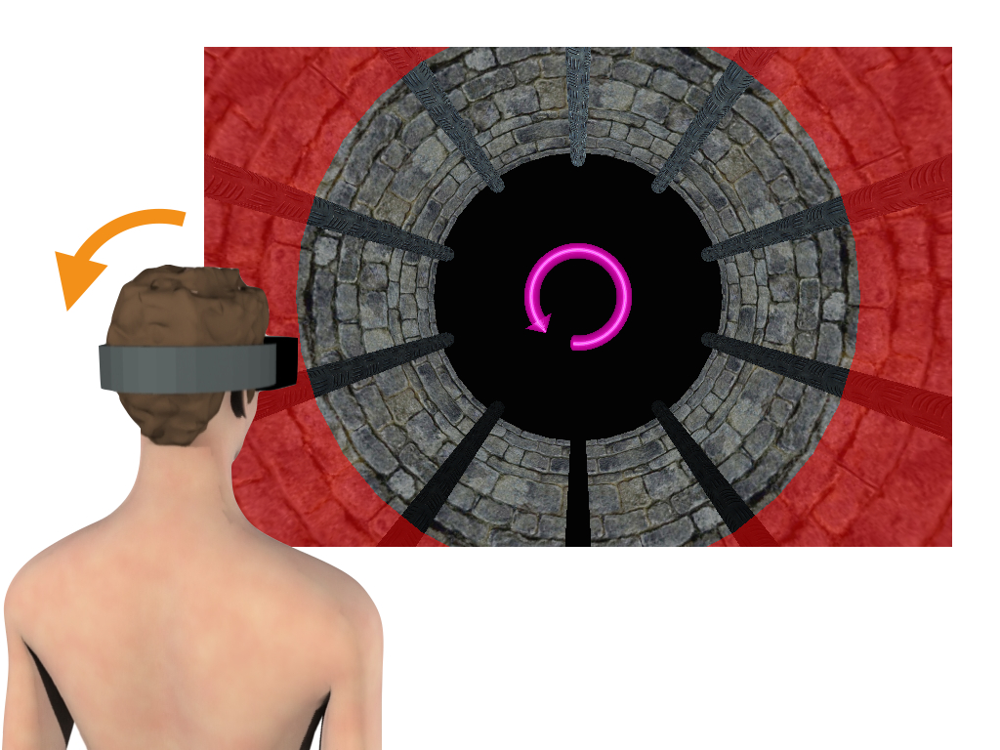
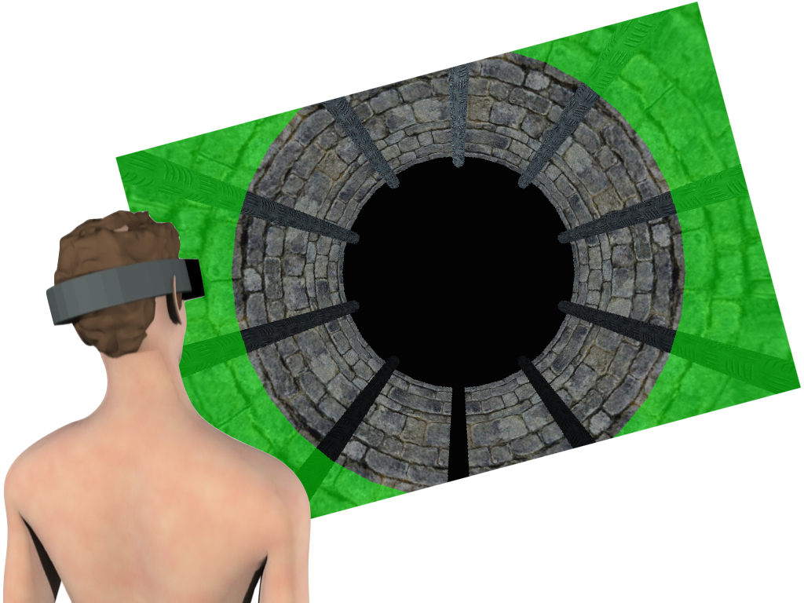

Step 3: Tilt the Head
If the halo turns red, you must tilt you head to a new orientation. The arrow tells you which way to rotate the head.

Roll your head slowly in the indicated direction until the halo turns bright green and hold this position.
